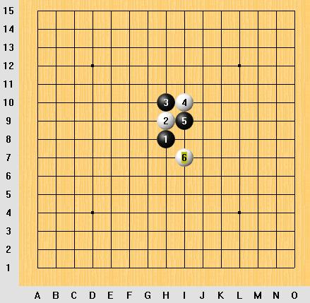
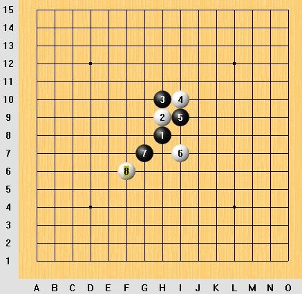
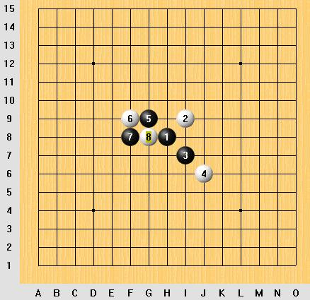
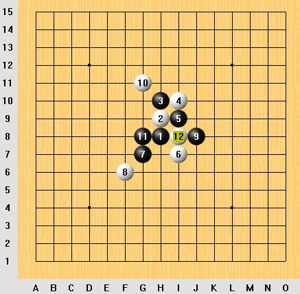

黑先行,如何VCT
#1 黑先行,如何VCT作者：sheal 发表时间：2007-6-27 19:10:29
黑先行,如何VCT
1=H8,2=H9,3=H10,4=I10,5=I9,6=I7
要求白4=I8时不存在盘端问题.

#2 Re:黑先行,如何VCT作者：sheal 发表时间：2007-6-28 18:00:35
原题黑7于G7活三,白8于F6防后等同浦月的下图.


以下必然演化至白12.
#3 Re:黑先行,如何VCT作者：sheal 发表时间：2007-7-7 10:58:08
公布答案
#4 Re:黑先行,如何VCT作者：风の情深 发表时间：2007-7-22 17:46:38
答案是个x ！看不到！谁有在发一个！谢谢